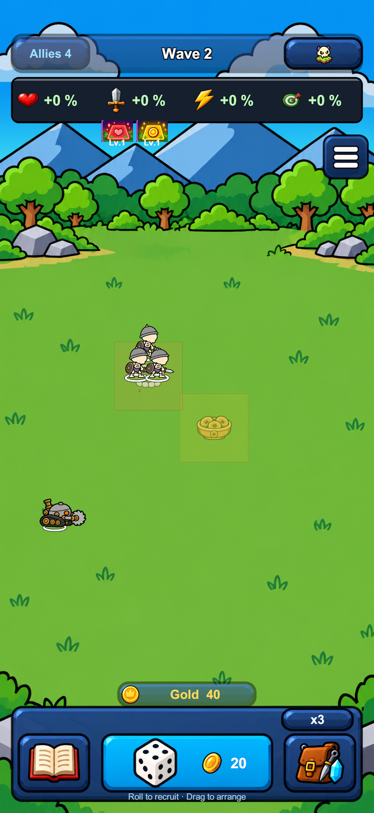

Ô Máu & Ô Vàng
Hai dấu ô gọn trên nền sân hiện tại: hàm răng + mưa máu, tụ bảo bồn + coin.
Ô Máu · mưa nhẹ
Ô Vàng · tụ bảo bồn
Ô Vàng Lv.1: quân đứng trong ô kết liễu địch nhận +4 coin. Dấu ô giữ nhẹ, nằm dưới nhân vật.Đã gắn và kiểm tra trong Unity Play Mode. Hai canvas trên là demo; ảnh game thật ở dưới.
Ảnh Unity Play Mode thật · iPhone X
